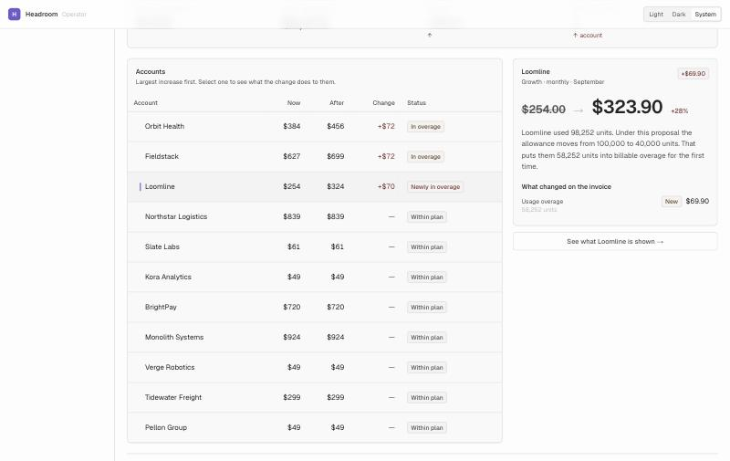
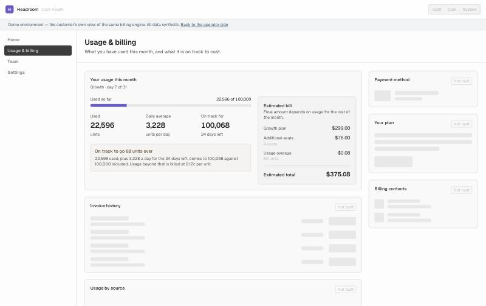
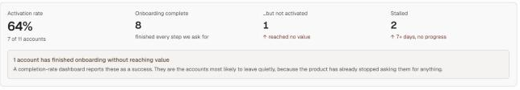
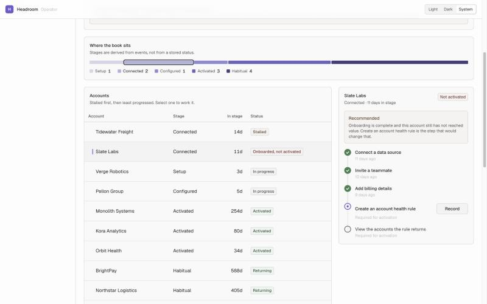
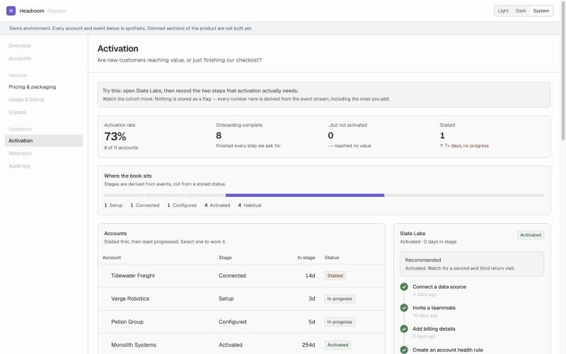
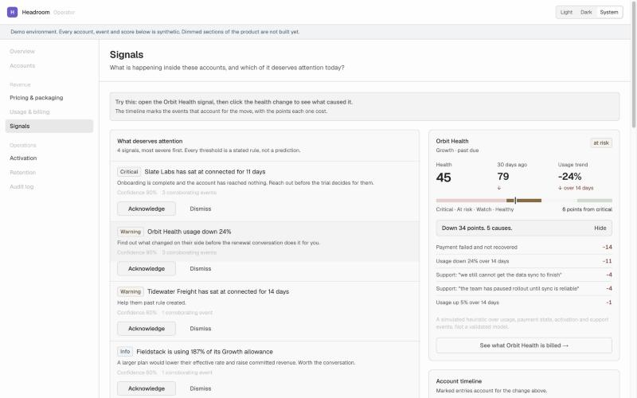
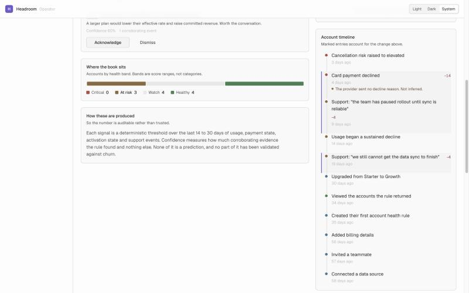

Headroom is a B2B SaaS company I invented so I could work on real product problems
without waiting for someone to hand me one. Three builds are finished. Here is what
they do, and what went wrong on the way.
It is one company rather than a folder of demos for a specific reason. The same eleven
accounts appear in every build carrying the same history, so each surface has to agree
with the others. Orbit Health's usage curve has to explain its invoice, and its invoice
has to explain why the account is past due. Most of the interesting problems came out
of holding that line.
Pricing and packaging
What a price change does to the customers you already have
A pricing page tells you what something costs. It cannot tell you what changing it does
to the people already paying you, which is the thing founders actually worry about
before they touch pricing at all.
So the operator view re-prices the whole book. Drop the Growth plan's included usage
from 100k to 40k and three accounts move. Orbit Health and Fieldstack were already over
their allowance, so both rise by $72. Loomline had been sitting at 98,252 units against
a 100,000 allowance, close enough that nobody had thought about it, and crosses into
billable overage for the first time: $254 to $323.90.
The other eight accounts do not move at all, because they are on different plans. A
single revenue number would have hidden every part of that.

Largest increase first. Selecting an account shows what the change does to that one
customer, and only the invoice lines that actually moved.
Pricing changes get modelled as one number. The number nobody models is the one that generates the emails.
Recording · 12s
The slider moment
Open Pricing & packaging, clean.
Drag Included usage from 100k down to 40k.
Hold while the table re-sorts and Loomline flips to “Newly in overage”.
Click Loomline. End on the panel.
The same engine renders the customer's own billing page, because a price change only
works if the customer sees it coming before the invoice does. Every figure on that page
can be checked by hand, which took three goes to get right.

22,596 used, plus 3,228 a day for the 24 days left, comes to 100,068. The parts of this
page that do not exist yet are drawn in and labelled rather than left out.
Activation
Everyone agrees a signup isn't an activation
Most dashboards still measure the checklist. Headroom keeps the two apart. The checklist
is what the product nags you about: connect a source, invite someone, add billing.
Activation is narrower, and I had to pick something specific for it to mean anything at
all: create an account health rule, then look at the accounts it returns. Both halves,
because configuring a thing you never use is not value.
That gives three numbers that disagree with each other. 64% of accounts activated.
Eight finished every onboarding step. One of those eight did all of them and got nothing.

The first number is the one a team would quote. The third is the one worth acting on.
The account is Slate Labs, eleven days stalled. Connected a source, invited a teammate,
added billing, never made a rule. Every completion metric in the product says it is
fine, and it is the account most likely to leave without anyone noticing, because the
product has stopped asking it for anything.

Stalled accounts sort first. The recommendation says what is actually wrong instead of
reporting progress.
Recording · 10s
The cohort moving
Open Activation. Hold on the four metrics for a beat.
Select Slate Labs. Click Record on each remaining step.
Cut back to the metrics as they recompute. No narration.
Recording those two steps moves the rate to 73%, drops the
onboarded-but-not-activated count to zero, and shifts the stage distribution. All of
it recomputes from the event stream, including the two events added a second earlier.
While building this I deleted the activatedAt column from the account
model. If you store activation and also derive it, the two drift apart the first time
someone backfills or replays an event, and then the team is planning against a number
nobody can reconstruct.

After recording the two steps Slate Labs was missing. No celebration on completion, on
purpose: a progress bar that congratulates inflates the number it is measuring.
Signals
Which of this actually deserves attention today
Most analytics surfaces hand you fifteen charts and a sentence suggesting you
investigate something. The interpreting is the expensive part, and it gets left to the
reader, who has less context than the system does.
So this surface does the interpreting. Ranked signals, each one naming the rule that
fired, the events corroborating it, and what to do about it. Every threshold is written
down and none of it is prediction, because nothing in this lab has been validated
against an outcome and a churn probability would be invented confidence.

Four signals, most severe first. Orbit Health is down 34 points, and the five causes
are listed with what each one cost.
The health score took the longest to get right. A number nobody can interrogate is a
number nobody acts on, so it is built as a list of attributed contributions rather than
one weighted formula. Clicking the change marks the events behind it.

The declined payment cost fourteen points, each support conversation four. The payment
entry also notes that the provider sent no decline reason, rather than inferring one.
A score of 45 says less than it appears to. The useful fact is that it sits six points
from critical, which is why the scale draws the thresholds instead of printing a word.
A signal list nobody trusts is worse than no list at all.
Which is why dismissing a signal asks why. Two of the five reasons fault the rule rather
than the account, and those get counted by signal kind. Several people calling one rule
too sensitive is a report about that threshold, and the page says so back.
Recording · 14s
Signal to cause
Open Signals. Pause on the four ranked items.
Click the Orbit Health signal.
Click the health change to expand the causes.
Scroll to the timeline and hold on the three marked entries.
Along the way
Four things that went wrong
These are more useful than the finished screens, because each one is the difference
between software that looks right and software that is.
A cent that rounded the wrong way
Converting dollars to cents, I used Math.round(dollars * 100). For $1.005
that returns 100, and the answer is 101. In floating point
1.005 * 100 is 100.49999999999999, so the error exists before
the rounding ever happens and nothing downstream can recover it. The conversion now
shifts the decimal point on the number's string form and never multiplies. A test
caught it, which is the only reason I know about it at all.
A meter labelled “used” that showed a forecast
The customer's usage bar filled from the projection while the label said used so far.
An account that had consumed 23% of its allowance rendered a full red bar. Every test
passed, because the arithmetic was correct and the arithmetic was not the problem. The
bar now fills from real usage with the allowance crossing marked on the same track.
A projection nobody could check
The page reported usage over seven days while computing the rate on the 6.5 days
actually elapsed. Anyone adding it up by hand landed 8% away from the published figure
with no way to see why. It took three passes to close, because each fix left one more
input derived from a number more precise than the one printed on screen. On a page
whose job is making a bill checkable, that is worth more than the precision it cost.
A test I had written to pass
Orbit Health is described everywhere as the account in trouble, and its own event record
says usage fell 23% over fourteen days. Building the signals surface, it produced no
signal at all. The generator had spread that decline evenly across sixty days, so a
fortnight comparison saw 6%. The account the whole dataset is built around was not in
trouble by its own numbers.
The seed test should have caught it two builds earlier. It asserted the drop was greater
than 3%, a threshold I had picked because it passed. It now checks the data against the
figure the event claims, so the two cannot drift apart again.
Underneath
The colour system fails the build
Both surfaces share one design system. Its palette is computed rather than chosen, and
every colour pair that actually renders is measured on each run, in both light and dark,
with the build failing when one drops below its threshold.
It has caught two real problems so far. One was a focus ring that had been silently
falling back to the text colour on every themed control. The other happened while I was
fixing something else: a chart scale I had built by reusing existing palette steps
measured as identical between its first two values, which would have shipped a bar chart
whose segments nobody could tell apart.
Scope
What this isn't
A synthetic environment. It shows billing logic and billing UX, not production reconciliation. No tax, no multi-currency, no dunning.
The activation event is designed, not discovered. A real one comes from correlating candidate events against retention, and nothing here does that.
Nothing about working inside an existing codebase, with its history and its constraints.
Nothing about what collaborating on a problem like this is actually like.